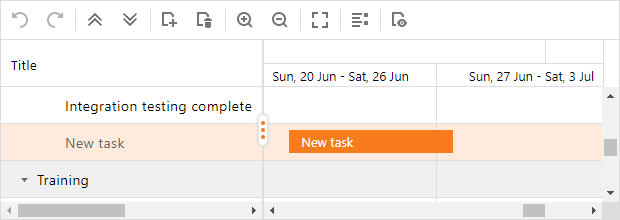
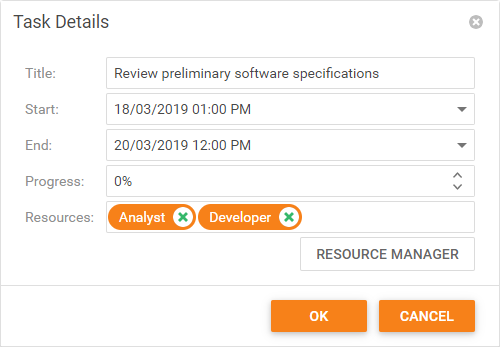

Manage Tasks
Add a Task
To create a task, right-click an existing task and select the "Add" context menu item, or click the "Add Task" toolbar item:
"New Task" - Adds a new task at the same level as the selected task.

"New Subtask" - Adds a child task to the selected task.

Edit a Task
Use one of the following approaches to edit a task:
Double-click a task in the task list.

Right-click a task and select the "Task Details" context menu item (or double-click a task in the chart area).

Hover the mouse pointer over the task you want to modify.

Move - Drag the task to change its start and end times.

Resize - Drag a resize handle (located at a task's edge) to change the task duration.

Change progress - Move the slider to change the task's progress.

Save Changes
The Gantt saves changes after you edit a task in the task list, move a task, or drag its resize handle in the chart area.

In the "Task Details" dialog, click OK to save changes.
Remove a Task
To remove a task, right-click a task and select the 'Delete Task' context menu item or select a task and click the appropriate toolbar item.

Undo/Redo Changes
Click "Undo" or "Redo" in the toolbar) (press Ctrl+Z or Ctrl+Y) to cancel or reverse changes.